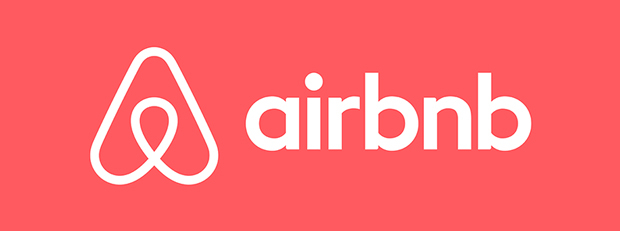

This project utilises a crypto currency sites' latest listings to compare the various currencies (crypto coins), price change within a certain time frame and view the related trends. The data was also cleaned to make it more relevant for its intended purpose, thus, the fluctuations in price and currencies over time were easily recognised as a diagram.

In this project a web scraper is created to scrap an Amazon product page but could potentially scrap other sites depending on their robots.txt file. It collects the title of the product you are looking at, its price and the date when scraped. It is set to a 24 hour timer while also creating and updating its csv file you can access. Optionally you can send yourself an email when the price reaches below a threshold to buy said product.
Comparing a selection of movies to find the correlation of how much it grossed with other factors such as its budget, the company who made it and the other columns are checked for any high correlation.
This is a data cleaning project using SQL for the Nashville housing dataset.
This is a data exploration project using SQL for the Covid dataset, which is Covid-19 related stats per country.

An Excel project in which the data is cleaned as you can see from the working sheet compared to the original "bike buyers" sheet, pivot tables are created to draw conclusions and interpret this dataset. Lastly a dashboard was created to display the data in a useful interactive way.
Data Professional survey breakdown, a total of 630 data professionals were surveyed about their work to get a general understanding of the field using two dashboards.

This project Uses the information from a dataset of the Airbnb's in Seattle to create useful interpretations of the data for the prospective buyer in mind. In order to understand the average price within a zip code, the average price per bedrooms, the count of listings per number of bedrooms and the revenue at throughout the year of 2016. The information is displayed as an interactive dashboard.
The data is cleaned whilst within an Excel spreadsheet then transferred to Tableau to transform the data in to useful charts and graphs for the dashboard.

Using a fictional customer call dataset the data is cleaned by Python.